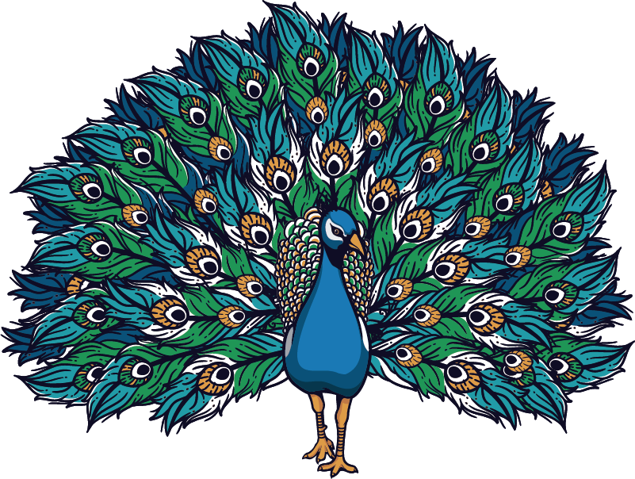

| User Name | Education | Locations |
|---|---|---|
| Praveen Kumar | B.Tech | Guntur |
| Mahendra Desai | CA | Chennai |
| Nagaraju Dasari | MCA | USA |
| Sateesh Alavala | MD | Vizag |
| Sudheer | B.Tech | Kakinada |
| State | |||||||||||||||||||||||||||||||||||||||||||||||||||||||||||||||||||||||||||||||||||||||||||||||||||
|---|---|---|---|---|---|---|---|---|---|---|---|---|---|---|---|---|---|---|---|---|---|---|---|---|---|---|---|---|---|---|---|---|---|---|---|---|---|---|---|---|---|---|---|---|---|---|---|---|---|---|---|---|---|---|---|---|---|---|---|---|---|---|---|---|---|---|---|---|---|---|---|---|---|---|---|---|---|---|---|---|---|---|---|---|---|---|---|---|---|---|---|---|---|---|---|---|---|---|---|
| East | |||||||||||||||||||||||||||||||||||||||||||||||||||||||||||||||||||||||||||||||||||||||||||||||||||
| Orissa | |||||||||||||||||||||||||||||||||||||||||||||||||||||||||||||||||||||||||||||||||||||||||||||||||||
| Bihar | |||||||||||||||||||||||||||||||||||||||||||||||||||||||||||||||||||||||||||||||||||||||||||||||||||
| West Bengal | |||||||||||||||||||||||||||||||||||||||||||||||||||||||||||||||||||||||||||||||||||||||||||||||||||
| Mizoram | |||||||||||||||||||||||||||||||||||||||||||||||||||||||||||||||||||||||||||||||||||||||||||||||||||
| West | |||||||||||||||||||||||||||||||||||||||||||||||||||||||||||||||||||||||||||||||||||||||||||||||||||
| Gujrat | |||||||||||||||||||||||||||||||||||||||||||||||||||||||||||||||||||||||||||||||||||||||||||||||||||
| Karnataka | |||||||||||||||||||||||||||||||||||||||||||||||||||||||||||||||||||||||||||||||||||||||||||||||||||
| South | Aandhra Pradesh | ||||||||||||||||||||||||||||||||||||||||||||||||||||||||||||||||||||||||||||||||||||||||||||||||||
| Tamil Nadu | |||||||||||||||||||||||||||||||||||||||||||||||||||||||||||||||||||||||||||||||||||||||||||||||||||
| Kerala | |||||||||||||||||||||||||||||||||||||||||||||||||||||||||||||||||||||||||||||||||||||||||||||||||||
| North | Jammu & Kashmir | ||||||||||||||||||||||||||||||||||||||||||||||||||||||||||||||||||||||||||||||||||||||||||||||||||
| Bihar | |||||||||||||||||||||||||||||||||||||||||||||||||||||||||||||||||||||||||||||||||||||||||||||||||||
| West Bengal | |||||||||||||||||||||||||||||||||||||||||||||||||||||||||||||||||||||||||||||||||||||||||||||||||||
| Mizoram | |||||||||||||||||||||||||||||||||||||||||||||||||||||||||||||||||||||||||||||||||||||||||||||||||||
| Flight schedule | ||||
| Flight Number: | From: | To: | Department: | Arrival |
|---|---|---|---|---|
| BA 3451 | Heathrow | Nuremberg | 19:20 | 19:50 |
| BA 1254 | Luton | Alicate | 19:40 | 20:50 |
| LH 331 | Heathrow | Hamburg | 20:00 | 20:20 |
| Total: 3 flights | ||||
| Book Title | Author | Book Price |
|---|---|---|
| Core Java | Cay hustman | 400 |
| Beginning Java | ivar Hortan | 600 |
| Learning Java | Kishori Shahane | 400 |
| Java Cookbook | Jhon Keller | 500 |
Peafowl is a common name for two bird species of the genus Pavo and one species of the closely related genus Afropavo within the tribe Pavonini of the family Phasianidae (the pheasants and their allies). Male peafowl are referred to as peacocks, and female peafowl are referred to as peahens.Peafowl is a common name for two bird species of the genus Pavo and one species of the closely related genus Afropavo within the tribe Pavonini of the family Phasianidae (the pheasants and their allies). Male peafowl are referred to as peacocks, and female peafowl are referred to as peahens.

The two Asiatic species are the blue or Indian peafowl originally from the Indian subcontinent, and the green peafowl from Southeast Asia. The Congo peafowl, native only to the Congo Basin, is not a true peafowl. Male peafowl are known for their piercing calls and their extravagant plumage. The latter is especially prominent in the Asiatic species, which have an eye-spotted "tail" or "train" of covert feathers, which they display as part of a courtship ritual. The functions of the elaborate iridescent colouration and large "train" of peacocks have been the subject of extensive scientific debate. Charles Darwin suggested that they served to attract females, and the showy features of the males had evolved by sexual selection. More recently, Amotz Zahavi proposed in his handicap principle that these features acted as honest signals of the males' fitness, since less-fit males would be disadvantaged by the difficulty of surviving with such large and conspicuous structures. A group of peacocks is called an "ostentation" or a "muster".[1] The Indian peacock (Pavo cristatus) has iridescent blue and green plumage, mostly metal-like blue and green. In both species, females are a little smaller than males in terms of weight and wingspan, but males are significantly longer due to the "tail", also known as a "train".[2] The peacock train consists not of tail quill feathers, but highly elongated upper tail coverts. These feathers are marked with eyespots, best seen when a peacock fans his tail. All species have a crest atop the head. The Indian peahen has a mixture of dull grey, brown, and green in her plumage. The female also displays her plumage to ward off female competition or signal danger to her young. Male green peafowl (Pavo muticus) have green and bronze or gold plumage, and black wings with a sheen of blue. Unlike Indian peafowl, the green peahen is similar to the male, but has shorter upper tail coverts, a more coppery neck, and overall less iridescence. Both males and females have spurs.[3][page needed] The Congo peacock (Afropavo congensis) male does not display his covert feathers, but uses his actual tail feathers during courtship displays. These feathers are much shorter than those of the Indian and green species, and the ocelli are much less pronounced. Females of the Indian and African species are dull grey and/or brown. Chicks of both sexes in all the species are cryptically coloured. They vary between yellow and tawny, usually with patches of darker brown or light tan and "dirty white" ivory. Mature peahens have been recorded as suddenly growing typically male peacock plumage and making male calls.[4] Research has suggested that changes in mature birds are due to a lack of estrogen from old or damaged ovaries, and that male plumage and calls are the default unless hormonally suppressed.[5]
Male green peafowl (Pavo muticus) have green and bronze or gold plumage, and black wings with a sheen of blue. Unlike Indian peafowl, the green peahen is similar to the male, but has shorter upper tail coverts, a more coppery neck, and overall less iridescence. Both males and females have spurs.[3][page needed] The Congo peacock (Afropavo congensis) male does not display his covert feathers, but uses his actual tail feathers during courtship displays. These feathers are much shorter than those of the Indian and green species, and the ocelli are much less pronounced. Females of the Indian and African species are dull grey and/or brown. Chicks of both sexes in all the species are cryptically coloured. They vary between yellow and tawny, usually with patches of darker brown or light tan and "dirty white" ivory. Mature peahens have been recorded as suddenly growing typically male peacock plumage and making male calls.[4] Research has suggested that changes in mature birds are due to a lack of estrogen from old or damaged ovaries, and that male plumage and calls are the default unless hormonally suppressed.[5]
Male green peafowl (Pavo muticus) have green and bronze or gold plumage, and black wings with a sheen of blue. Unlike Indian peafowl, the green peahen is similar to the male, but has shorter upper tail coverts, a more coppery neck, and overall less iridescence. Both males and females have spurs.[3][page needed] The Congo peacock (Afropavo congensis) male does not display his covert feathers, but uses his actual tail feathers during courtship displays. These feathers are much shorter than those of the Indian and green species, and the ocelli are much less pronounced. Females of the Indian and African species are dull grey and/or brown. Chicks of both sexes in all the species are cryptically coloured. They vary between yellow and tawny, usually with patches of darker brown or light tan and "dirty white" ivory. Mature peahens have been recorded as suddenly growing typically male peacock plumage and making male calls.[4] Research has suggested that changes in mature birds are due to a lack of estrogen from old or damaged ovaries, and that male plumage and calls are the default unless hormonally suppressed.[5]
Male green peafowl (Pavo muticus) have green and bronze or gold plumage, and black wings with a sheen of blue. Unlike Indian peafowl, the green peahen is similar to the male, but has shorter upper tail coverts, a more coppery neck, and overall less iridescence. Both males and females have spurs.[3][page needed] The Congo peacock (Afropavo congensis) male does not display his covert feathers, but uses his actual tail feathers during courtship displays. These feathers are much shorter than those of the Indian and green species, and the ocelli are much less pronounced. Females of the Indian and African species are dull grey and/or brown. Chicks of both sexes in all the species are cryptically coloured. They vary between yellow and tawny, usually with patches of darker brown or light tan and "dirty white" ivory. Mature peahens have been recorded as suddenly growing typically male peacock plumage and making male calls.[4] Research has suggested that changes in mature birds are due to a lack of estrogen from old or damaged ovaries, and that male plumage and calls are the default unless hormonally suppressed.[5]